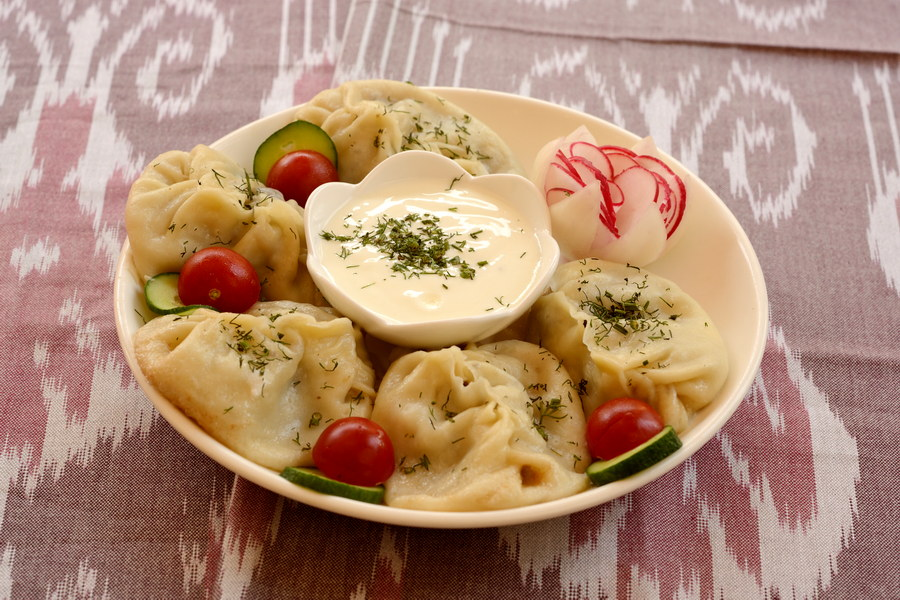
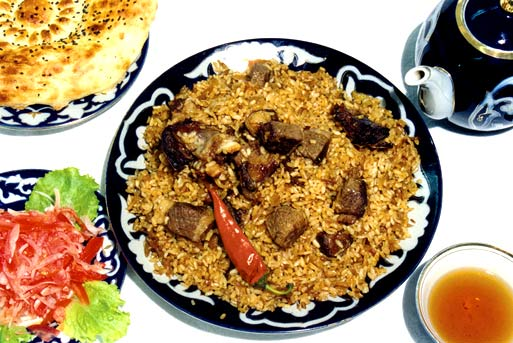
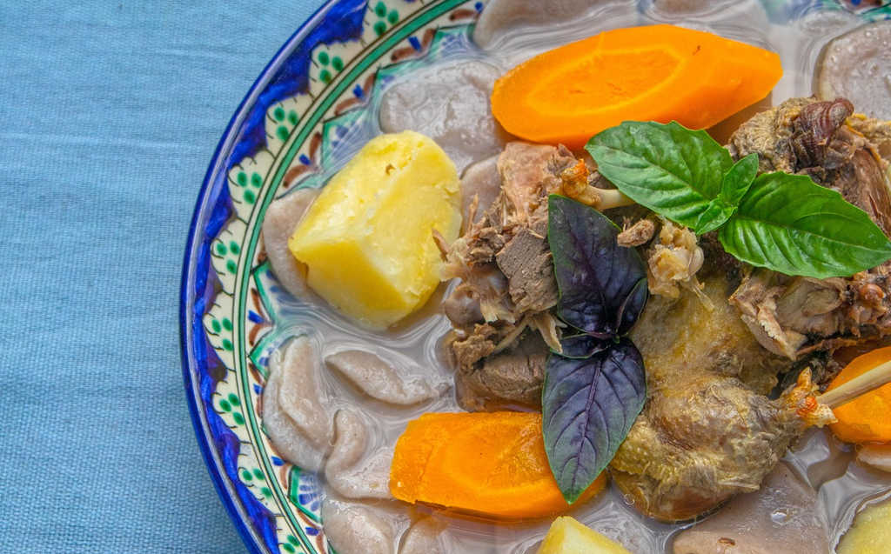

Karakalpakstan
Oasis in Central Asia
MENU ≡
Home
Sources
Travel
Connect
More Information
Map
Location
Scenery
Structure
Visit
Date
History
Formation
Development
Events
Recent
Cuisine
Cafes
Famous
Reviews
Learn to cook
Culture
Delicious!
Famous meals
Manti

Palaw

Gurtik
